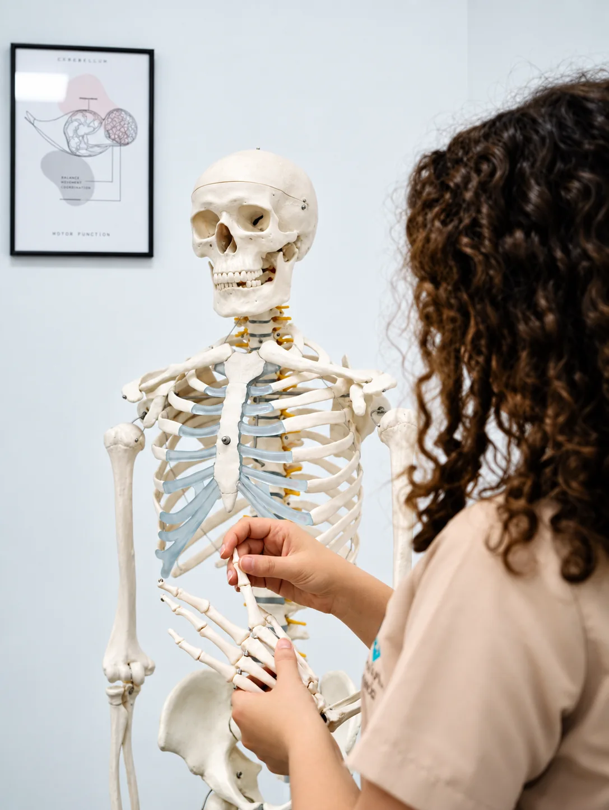

Clínica de fisioterapia en Villanueva del Rosario
Tu salud merece tiempo y escucha
Fisioterapia, nutrición y podología con un enfoque cercano, una valoración completa y tecnología de última generación.
Fisioterapia, nutrición y podología con un enfoque cercano, una valoración completa y tecnología de última generación.


 Atención integral
Atención integralEn Clínica María Conejo trabajamos para que cada persona reciba una atención integral en su proceso de recuperación. La fisioterapia va más allá: se trata de comprender a fondo tu estado y acompañarte de manera cercana y segura.
Por eso comenzamos siempre con una valoración completa y personalizada —tu historial, tus hábitos y tus necesidades— para diseñar un plan adaptado a ti, con el objetivo de mejorar tu bienestar, recuperar tu movilidad y prevenir futuras lesiones.
Elige lo que mejor describe tu situación y te mostramos por dónde empezar.
Una valoración nos dirá de dónde viene el dolor. Solemos combinar terapia manual, ejercicio y, si está indicado, técnicas invasivas o diatermia.
 FisioterapiaFisioterapia musculoesquelética
FisioterapiaFisioterapia musculoesquelética FisioterapiaTerapia manual
FisioterapiaTerapia manual FisioterapiaFisioterapia invasiva
FisioterapiaFisioterapia invasivaEcografía para ver el tejido, tratamiento preciso y una vuelta progresiva a tu deporte, apoyada en el ejercicio.
 FisioterapiaEcografía musculoesquelética
FisioterapiaEcografía musculoesquelética FisioterapiaEjercicio terapéutico
FisioterapiaEjercicio terapéutico FisioterapiaTecarterapia y diatermia Winback
FisioterapiaTecarterapia y diatermia WinbackAcompañamos la recuperación tras cirugía ortopédica o traumatológica paso a paso, en clínica o a domicilio.
 FisioterapiaRehabilitación postquirúrgicaFisioterapiaEjercicio terapéutico
FisioterapiaRehabilitación postquirúrgicaFisioterapiaEjercicio terapéutico FisioterapiaFisioterapia a domicilio
FisioterapiaFisioterapia a domicilioCólico del lactante, deformidades craneales, desarrollo motor y asesoramiento de lactancia con una fisioterapeuta formada en pediatría y neonatología.
Consultar mi caso por WhatsAppPostura, fuerza del core y prevención de lesiones con ejercicio guiado por fisioterapeuta, en grupos reducidos o sesiones individuales.
Consultar mi caso por WhatsAppValoración nutricional completa, plan personalizado y seguimiento para salud, peso o deporte.
Consultar mi caso por WhatsAppNutrición adaptada a diabetes, hipertensión, colesterol, enfermedades digestivas e intolerancias, siempre junto a tu equipo médico.
Consultar mi caso por WhatsAppEstudio de la pisada, plantillas a medida, quiropodia y órtesis para caminar sin molestias.
Consultar mi caso por WhatsAppUn mismo centro, tres áreas coordinadas para cuidarte de forma integral.

Valoración individual, terapia manual, ejercicio y tecnología avanzada para aliviar el dolor y recuperar tu movilidad.

Evaluación completa, planes personalizados, educación alimentaria y seguimiento continuo con nuestra nutricionista.

Estudio de la pisada, plantillas personalizadas, quiropodia, órtesis y atención a domicilio para caminar sin molestias.
Así es el camino que recorremos contigo desde la primera visita.
Conocemos tu historia, tus hábitos y lo que te preocupa.
Exploración completa y ecografía cuando aporta información.
Elegimos contigo las técnicas y los objetivos.
Ejercicios para casa, seguimiento y ajustes.
Siempre empezamos analizando tu historial, tus hábitos y tus necesidades específicas. Solo así podemos diseñar un plan adaptado a ti.
Ecógrafo de última generación y diatermia Winback: herramientas que aportan precisión, seguridad y seguimiento real de tu evolución.
Te explicamos cada paso, te enseñamos ejercicios para casa y comprobamos cómo los haces. Tu recuperación también es tuya.
Incorporamos tecnología de última generación porque aporta seguridad, optimiza los resultados y te ayuda a sentirte confiado en todo momento.
Imagen en tiempo realNos permite ver más allá de los síntomas y personalizar tu tratamiento al máximo.
Combina alta, media y baja frecuencia para actuar a nivel superficial, medio y profundo. Pulsa cada nivel:
Estimula los tejidos profundos y favorece la regeneración celular.
Mejora la circulación y la oxigenación de la zona tratada.
Efecto analgésico y antiinflamatorio desde la propia sesión.

Siente cómo tu cuerpo gana fuerza, equilibrio y bienestar en contacto con la naturaleza. Y en la sala, sesiones guiadas para mejorar tu postura, fortalecer tu core y prevenir lesiones.
El movimiento es una de las herramientas más poderosas de la fisioterapia. Por eso, en casi todos los tratamientos, te enseñamos ejercicios adaptados y comprobamos que los haces bien.
Ejercicio terapéuticoMejora la tolerancia al dolor
Agiliza el proceso de recuperación
Ayuda a una recuperación óptima y de calidad
Evita que se agrave la lesión
Mantiene e incrementa la movilidad y la fuerza
Restablece la capacidad funcional del tejido afectado
Graduada en Fisioterapia y con un Máster en Fisioterapia Manual e Invasiva para el Tratamiento del Dolor y de la Disfunción por la Universidad de Granada.
Especializada además en fisioterapia pediátrica, atención temprana, neonatología y educación, María cree firmemente en el poder del acompañamiento terapéutico, la educación en salud y la escucha activa como pilares de una recuperación efectiva.
Reels reales de la clínica: pulsa en cualquiera para verlo con sonido.

Una primera visita de 10. Te explica todo al detalle y sabe en cada momento exactamente qué necesitas. Cuenta con todo lo necesario para tratar cualquier lesión y ayudarte a mejorar (eco, punción, tratamiento de calor…). Además, te manda ejercicios para hacer en casa, explicándolos y comprobando cómo los haces para asegurarse de que los realizas correctamente. Se nota que se preocupa de verdad por sus pacientes.
Estoy encantada con el trato y la profesionalidad de María Conejo. Desde la primera sesión me sentí en buenas manos: supo escucharme, valorar mi caso y aplicar el tratamiento adecuado. Gracias a ella he notado una gran mejoría y, lo más importante, me ha dado herramientas para prevenir futuras molestias. 100% recomendable, tanto por su experiencia como por su cercanía y empatía.
Tanto mi pareja como yo hemos sido tratados por María por diferentes lesiones con resultados muy satisfactorios. Es una gran profesional y además cuenta con tecnología avanzada que ayuda mucho al diagnóstico y tratamiento. Te explica todo con claridad y te ayuda en el proceso de recuperación. Muy satisfecha con su trato y resultados.

Bonos de sesiones de fisioterapia y tarjetas regalo con 1 año de validez. Pregúntanos sin compromiso.
Pedir informaciónColaboramos con agrupaciones de la zona para mejorar el acceso a la fisioterapia y compartir nuestra pasión por la salud y el bienestar.
Consejos, novedades, FisioPilates al aire libre y el día a día de la clínica.
Lo que más nos preguntáis antes de la primera visita.
Atención con cita previa. Festivos: consultar.
No. Puedes reservar directamente por WhatsApp o por teléfono. Si tienes informes, pruebas de imagen o indicaciones de tu médico, tráelos a la primera visita: nos ayudan a entender mejor tu caso.
Empieza con una valoración completa: conversamos sobre tu historia, tus hábitos y lo que te ocurre, exploramos cómo te mueves y, cuando aporta información, utilizamos la ecografía. Con todo ello te explicamos qué ocurre y diseñamos contigo un plan de tratamiento.
Ropa cómoda que permita moverte y acceder con facilidad a la zona a tratar. Para FisioPilates, ropa deportiva y calcetines; para el estudio de la pisada, el calzado que usas habitualmente.
De lunes a jueves de 11:00 a 14:00 y de 15:00 a 21:00, y los viernes de 11:00 a 14:00 y de 15:00 a 20:00. Sábados y domingos, cerrado. Se atiende con cita previa.
Sí. Hay bonos de sesiones de fisioterapia y tarjetas regalo, con una validez de 1 año desde su adquisición. Pregúntanos sin compromiso por las modalidades disponibles.
Avísanos con al menos 12 horas de antelación. Así otra persona que lo necesite podrá aprovechar ese hueco. Las ausencias sin aviso conllevan el cargo íntegro de la sesión.
Responde tres preguntas y te preparamos el mensaje para enviarlo por WhatsApp. No guardamos ningún dato: tú decides si lo envías.

Estamos en C. Fuente Toril, 24, con aparcamiento gratuito en la calle y acceso adaptado para silla de ruedas.
Te acompañamos en el proceso
Escríbenos y te ayudamos a encontrar la atención que necesitas. Respondemos lo antes posible.